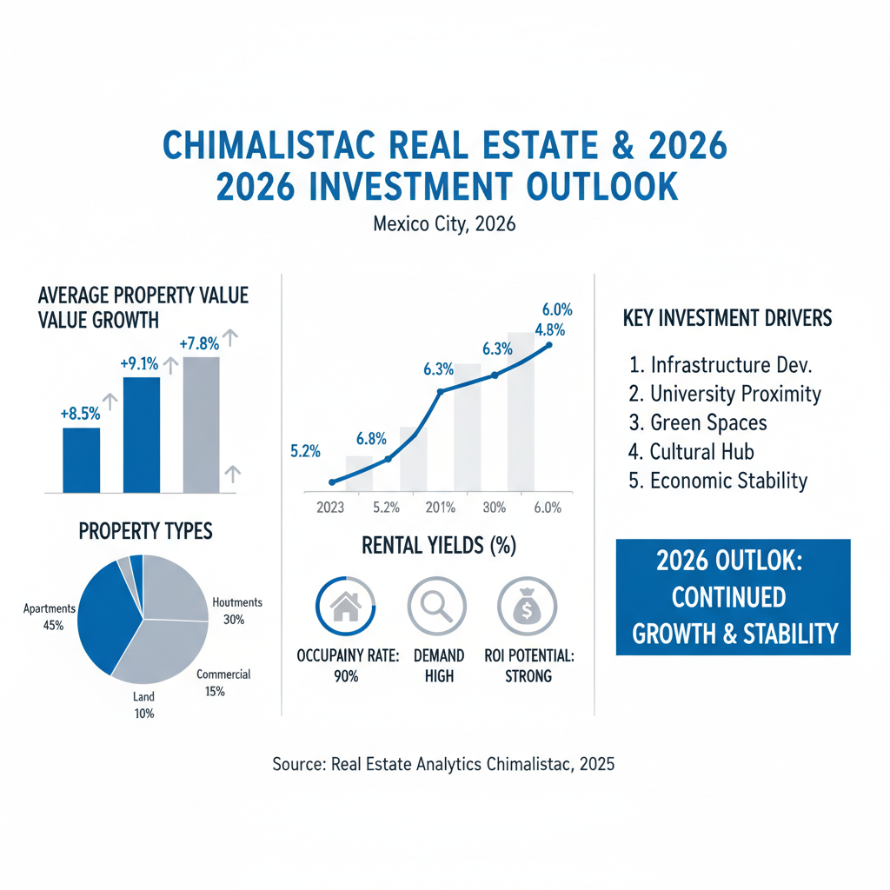

Architectural Guide 2026
Chimalistac: Architectural Legacy, Future Value.
Where 18th-century tranquility meets 2026 innovation, Chimalistac is more than a neighborhood—it’s a declaration of heritage capital. We navigate its singular landscape, bridging global architectural standards with the profound local expertise required to transform a historic shell into a modern masterpiece. This is where discerning ownership begins.

The Resident Architect's View
I may live in Condesa, drawn to its Art Deco pulse and bustling avenues, but Chimalistac calls to a different, deeper sensibility. There's a particular quality of light here at 5 PM, filtering through ancient jacarandas onto the chiluca cobblestones of Paseo del Río, illuminating the thick masonry walls with a golden hue that speaks of centuries. It's a profound sense of quietude, punctuated only by the distant, rhythmic hum of Avenida Insurgentes—a reminder of its privileged remove. Investing here is not merely an acquisition; it's an homage to Mexico City's enduring architectural soul, a 'love letter' written in stone and light.

Erik Martínez, AIA
Principal Architect. Former SHoP Architects NYC. Bringing international precision to CDMX's most complex heritage assets.
Iconic Landmarks
- Carmelite Monastery of San Ángel
- Casa Rilo (Callejón de La Bombilla)
- Historic Bridges and Plazas
Chimalistac: An Enclave of Enduring Value
Originally consecrated as the serene orchard for the Carmelite monastery of San Ángel, Chimalistac has gracefully evolved into an elite residential enclave within the Álvaro Obregón borough. In 2026, this neighborhood stands as Mexico City's definitive example of 'heritage capital,' where historical provenance directly translates into enduring market value. Its distinction is not merely aesthetic; it is enshrined by ultra-localized supply constraints due to historical protection, creating a 'scarcity premium' that elevates Chimalistac beyond transient market fluctuations. Here, real estate transcends a financial instrument, becoming a truly unique 'lifestyle asset.'
Architectural Dialogue: Colonial Aesthetic, Modern Imperatives
The character of Chimalistac is defined by its immutable colonial aesthetic—cobblestone streets, ancient trees, and thick masonry walls that impart a natural thermal mass. Yet, this historic canvas demands sophisticated architectural solutions for 2026 living. The density of the tree canopy and the inherent narrowness of its streets mean ground floors can be inherently dim. Our approach prioritizes drawing vertical light through strategic interventions like central 'wooded patios' or bespoke skylights, a principle elegantly demonstrated in projects such as Casa Rilo on Callejón de La Bombilla. Simultaneously, addressing the external acoustic environment—particularly the 'noise canyon' effect from adjacent Avenida Insurgentes—necessitates 'acoustic luxury' through double-paned laminated glass and silent HVAC systems.
Geotechnical Reality: The Seismic Advantage
One of Chimalistac's most significant, yet often understated, technical advantages is its privileged location on Zone I (Firm Ground) or Zone II (Transition Zone) soil. This geological reality sharply distinguishes it from the high-risk Zone III (Lakebed Zone)—areas like Roma or Condesa, where soft clays dramatically amplify seismic waves. In Zone I, the soil exhibits high resistance and reduced compressibility, meaning seismic wave amplification is significantly mitigated. This geophysical robustness meant that during the pivotal 1985 and 2017 seismic events, Zone I and II areas experienced markedly less structural damage, positioning Chimalistac as a true 'safe haven' for the discerning investor concerned with long-term structural integrity.
For luxury renovations and new builds in Chimalistac, our architectural practice integrates US NCARB/AIA rigorous engineering standards with the profound local expertise of Mexico City. We meticulously oversee every structural detail, from seismic retrofitting to foundation design, leveraging the inherent stability of the subsoil. This rigorous methodology, coupled with a transparent project management model—often a 'contrato de obra a precio alzado' (fixed-price contract) or a percentage-of-cost model—ensures complete visibility on material procurement and labor costs, effectively eliminating the informal 'Gringo Tax' often encountered in the local maistro labor market. We build not just homes, but legacies, engineered for permanence.
Heritage Integration: Navigating INAH & INBAL
Chimalistac is formally designated a 'Zona de Monumentos Históricos,' placing its architectural integrity under the strict purview of federal institutions: the Instituto Nacional de Antropología e Historia (INAH) and the Instituto Nacional de Bellas Artes y Literatura (INBAL). This dual protection means that many of its esteemed streets, including Paseo del Río, Rafael Checa, and Del Secreto, are rigorously catalogued, with their façades considered public monuments.
Renovating in Chimalistac is an exercise in meticulous deference to history. The aesthetic constraints for 2026 are explicit: exterior detailing mandates the use of indigenous stones such as chiluca or cantera. Façade color palettes are stringently restricted by INAH, favoring ochre, terracotta, and a deep 'oxblood' red. Modern 'floor-to-ceiling' glass panels are generally prohibited on street-facing elevations; windows must meticulously respect colonial vertical proportions. Rooflines are defined by flat surfaces with traditional teja (clay tile) accents. Our expertise lies in navigating these Heritage Hurdles, transforming them from regulatory obstacles into opportunities to enhance value, ensuring your vision is realized without encountering a dreaded Clausurado (stoppage) sticker from the authorities.
Water Security: Resilience Beyond the Cutzamala
In 2026, water security represents Mexico City's most critical infrastructural challenge. The venerable Cutzamala System, supplying approximately 25% of the city’s water, is undergoing its first major upgrade in four decades, yet still faces tangible 'Day Zero' risks during historical minimum reservoir levels in June. For a Chimalistac residence, a proactive water strategy is not merely advisable—it is mandatory. Given that the city’s distribution network loses 40% of its water to leaks, a robust household cistern functions as the ultimate line of defense. We recommend large estates (500m2+) integrate 20,000 to 30,000-liter cisterns with dual-pump and UV filtration systems. The prevailing trend for 2026 is 'decentralized capture,' featuring advanced rainwater harvesting systems that feed into secondary 'greywater' cisterns, indispensable for sustaining the lush, high-value landscaping that defines Chimalistac’s aesthetic.
Architectural Feasibility: Chimalistac 2026
| Project Type | Avg. Permit Time | Seismic Risk Level | Conservation Status |
|---|---|---|---|
| Historic Shell Conversion | 18 - 24 Months (inclusive of permits) | Moderate (Heritage Compliance, Bureaucracy) | High ROI Potential (18-24% 3-Year Estimated ROI) |
| Luxury Lifestyle Renovation | 12 - 18 Months (post-permits) | Low-Moderate (Technical Integration) | Core Asset (12-15% 3-Year Estimated ROI) |
| New Build/Major Remodel | 15 - 20 Months (post-permits) | Moderate (Zoning Density, Public Space Mitigation) | Stable Appreciation (10-14% 3-Year Estimated ROI) |
Advanced Architectural Solutions: Bridging Eras
Our specialized renovations in Chimalistac are an intricate ballet between preservation and progression. We integrate advanced acoustic luxury, installing double-paned laminated glass and virtually silent HVAC systems to shield interiors from urban soundscapes. To counteract natural dimness, we meticulously design for vertical light infusion through central 'wooded patios' or precisely placed skylights. Connectivity is foundational: properties are equipped with high-speed fiber optic networks (up to 1 Gbps) and resilient power solutions, including lithium-ion battery backups and solar panels—features prominently valued on streets like Vizcainoco Street. New constructions, commanding a 12% premium, embed modern seismic standards and high-efficiency utilities, ensuring your estate is not merely beautiful, but future-proof.
Crafting the Interior Narrative: Bespoke Luxury
For the interiors of Chimalistac estates, our philosophy centers on creating spaces that exude bespoke luxury while remaining deeply respectful of the architectural context. This translates into custom designs that seamlessly blend 18th-century masonry with 2026 technological integration. We specify imported marble, rich hardwood floors, and smart home systems, all artfully concealed within the historic fabric. Our design focus extends to ambient lighting schemes that transform typically dim ground floors into luminous living areas, and the integration of acoustic glass and advanced insulation for unparalleled interior serenity. Each element is curated to deliver an environment of sophisticated comfort and understated grandeur.
The Chimalistac Cheat Sheet
- Best Streets Paseo del Río, Rafael Checa, Del Secreto, Callejón de La Bombilla
- Zoning Code H (Habitacional) - Conservation Zone, 2-3 levels, 40% 'área libre'
- Est. Cost / m² USD $1,500 - $2,500+/m² (High-End Custom Construction)
- Best Coffee Secret garden cafes near Plaza San Jacinto
- Local Quirk The 'noise canyon' effect on the eastern perimeter, requiring advanced acoustic solutions.
The Challenge
The primary challenge in Chimalistac lies in reconciling its profound cultural heritage with the demands of modern luxury living. This includes navigating the intricate bureaucratic delays from multi-agency approvals—from SEDUVI to INAH—which can prolong project execution by up to 0.9% in the residential sector, impacting carry costs. Further, the critical issue of water scarcity, exacerbated by Cutzamala's 'Day Zero' risks, necessitates significant upfront investment in advanced water resilience systems.
For the elite international investor, the transactional friction is notable. Buyer closing costs range from 6% to 10%, with the progressive Impuesto sobre la Adquisición de Inmuebles (ISAI) reaching 4-8% for high-value properties in Álvaro Obregón. Furthermore, the informal 'Gringo Tax' can inflate skilled labor quotes by 30-50% beyond local benchmarks. Overcoming these requires a deeply integrated professional network, with a high-level Notario ensuring 'fe pública' and an experienced DRO (Director Responsable de Obra) providing legal liability for 10 years and navigating the complex Normas Técnicas Complementarias for seismic safety.
Our Solution
Our strategy is built for the 'patient investor'. We emphasize acquisitions focused on 'remodeling opportunities' within catalogued streets like Rafael Checa or Paseo del Río, where the value delta between a 'historic shell' and a 'lifestyle estate' is maximized. By meticulously integrating 2026 digital amenities—from 1 Gbps fiber connectivity to advanced solar autonomy—we transform these properties into the 'ultimate asset' for the modern elite resident. This approach, prioritizing seismic safety, water resilience, and absolute heritage compliance, secures an asset that is as culturally significant as it is financially robust.
We eliminate the 'Gringo Tax' through radical transparency and strategic project management. By engaging a certified Director Responsable de Obra (DRO) who utilizes a 'contrato de obra a precio alzado' (fixed-price contract) or a percentage-of-cost management model, we provide clarity on weekly 'rayas' (wages) and material procurement. While informal quotes might inflate costs, the fair market rate for luxury CDMX construction, complete with imported marble and smart tech, ranges from USD $1,000 to $1,400 per square meter, or even up to $2,500+ for bespoke, high-end custom projects with solar integration and acoustic glass.


Planning to Buy?
Don't sign a contract before a technical audit. We offer pre-purchase structural assessments in Chimalistac.
2026 Cost Report
Get our detailed breakdown of current labor and material costs for luxury residential in CDMX.
Start Your Chimalistac Legacy
NYC Precision. Mexican Craft. We eliminate uncertainty for international investors.